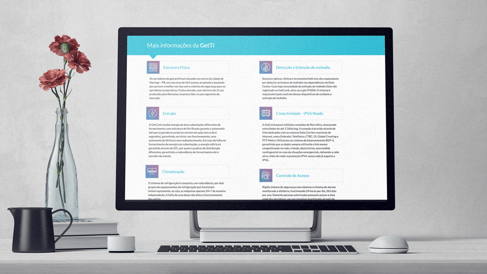
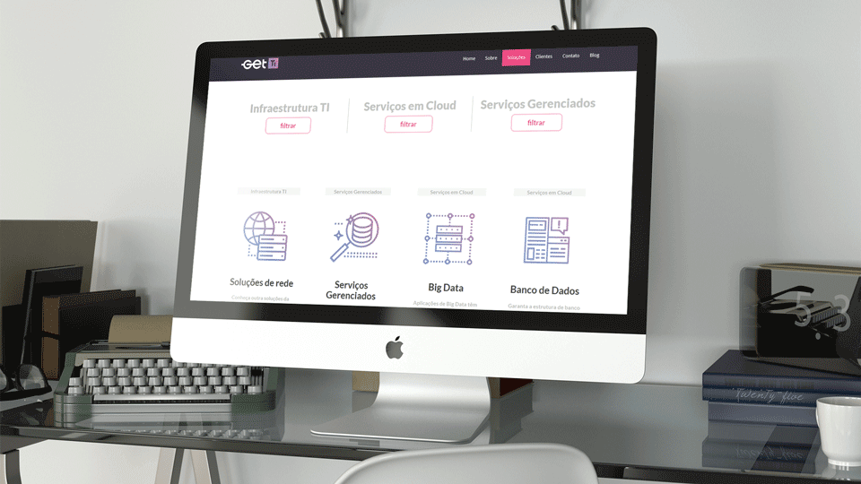

Get TI
A Get TI é o braço de infraestrutura da GetCard. Após o redesign da marca e atualização do site, realizados pela incrível Paraleloz.digital, surgiu a demanda de novos ícones personalizados com a identidade visual da empresa e condizentes com os serviços e configurações oferecidos, foi nessa missão que mergulhei de cabeça!
- UI Kit - Design de ícones


